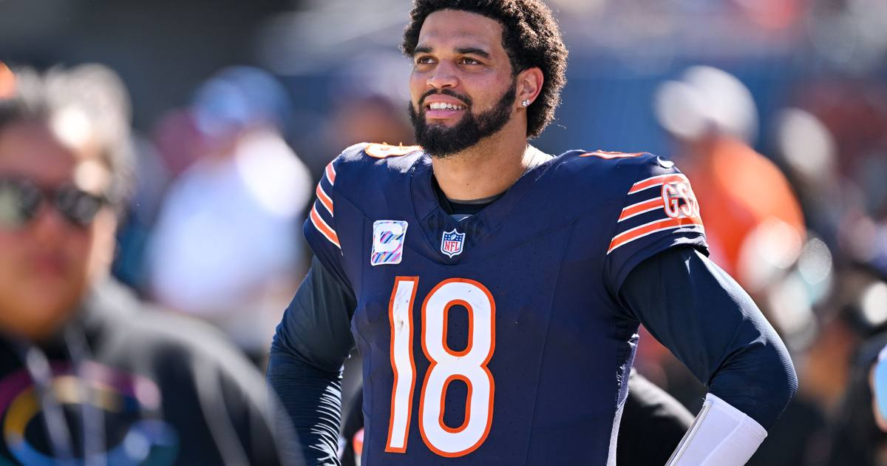

Odds Shifting Toward Chicago Ahead of Thursday Night
The line for tonight's Patriots-Bears Thursday nighter has moved from Chicago -2.5 to Chicago -3 at DraftKings, with New England limping in — Romeo Doubs on IR and most of its starting offensive line hurt.

Disclosure: this post contains affiliate links. I earn a commission on qualifying purchases.
Money's talking
The line for Thursday night's Patriots-Bears game has moved from Chicago -2.5 to Chicago -3 at DraftKings, with kickoff under 48 hours away.
New England is limping into it with Romeo Doubs on injured reserve and most of its starting offensive line hurt.
Why the number is moving
A half-point of steam toward the home favorite this late in the week is a signal, not noise. The Patriots' offensive line situation is the driver — when most of your starting front five is banged up on a short week, the market bakes in more pressure on Drake Maye and a shorter clock for the whole offense.
Tonight's game is one of the week's best QB matchups, and Chicago being asked to lay a field goal at home tells you where the money thinks the trenches battle lands.
Source: Sports Illustrated
Watch
Source: TNF: Patriots vs Bears Best Bets | NFL Week 7 Picks and Predictions (Picks and Parlays)
NFL handicapper Mark Zinno breaks down the odds, spread (Bears -3), total, and key matchups for Thursday night's Patriots-Bears game — the full betting picture on tonight's TNF kickoff.
Gear up: Sports category post → [Fanatics](https://fanatics.93n6tx.net/WOLjqe): via Fanatics